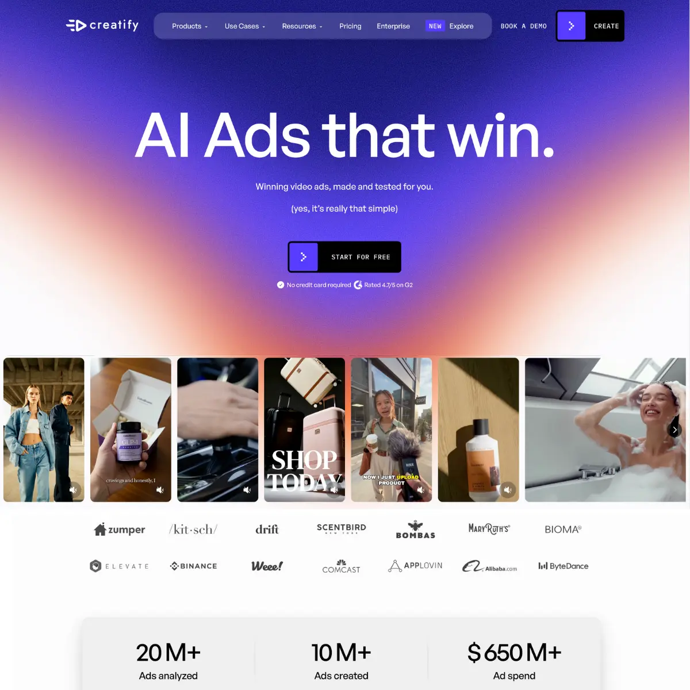

Arcads AI vs Creatify AI (2026): Best AI Ad Generator Tool?
Updated June 16, 2026·8 min read
TL;DR
Creatify AI is the better choice for performance marketers who need competitor ad tracking, batch generations, and Ad Launcher integrations.
Arcads AI is slightly stronger on facial mapping and visual realism if you only need standard visual asset exports.
If you want to bypass robotic AI avatars completely, UGCDrop provides real creator video clips starting at $28/month (30 downloads).
AI UGC ad generators are the default path to scale social video creatives. While they eliminate the creator sourcing loop, they present different tradeoffs in realism vs. campaign analytics. This guide compares Arcads and Creatify to help you optimize your ad spend.
What is the main difference between Arcads and Creatify?
The primary difference lies in the distribution and intelligence layer. Arcads operates strictly as a video creation studio (scripts in, renders out). Creatify is an end-to-end media buyer tool, providing competitor research databases, ad-launcher integrations, and timeline templates.
Arcads AI: Focuses on visual realism, translation in 30+ languages, and custom face mapping.
Creatify AI: Focuses on competitor intelligence (30M+ ads), batch variation rendering, and campaign launchers.
2.7x
increase in leads generated when switching from static image cards to dynamic AI-generated video layouts in paid ad campaigns.
Source: Creatify Customer Case Studies, 2025
Arcads — choose from AI actors to generate synthetic UGC video ads.
Go Deeper: Side-by-Side Breakdown
1. The Creation Loop: Renders vs. Competitor Ad Intelligence
Arcads starts from a script you write. It renders the virtual presenter, but researching what hook or layout to build is your homework. Creatify includes competitor ad databases, analyzing 30M+ high-performing social ads, and features a "De-Edit Cloner" to recreate successful ads based on reference URLs. This helps media buyers copy proven formats directly.
2. Rendering Workflows: Bulk Variations vs. Timeline Swaps
In paid ad testing, running 5 to 10 visual variants of the same script is crucial. Creatify supports batch generation, rendering up to 50 variations with different hooks and templates instantly. Arcads is a manual script editor: you swap b-roll tracks and adjust text overlays slide-by-slide, which slows down the A/B testing loop.
3. Pricing Tiers: Hidden Subscriptions vs. Credit Gates
Creatify offers a free watermarked plan and Starter plans from $33/month, making it accessible for beginners. Arcads hides its pricing plans on its public site, routing users through a signup wall to access subscriptions (starting around $99/mo). Marketers wanting real creator clips can use UGCDrop's pay-as-you-go database starting at $28/month (30 downloads).
Specification Comparison Matrix
Metric / Feature
Arcads AI
Creatify AI
Primary Focus
High-realism AI visual renders
Paid ad creative at volume
Competitor ad Database
Not offered
Yes (30M+ ads analyzed)
Batch Variations
Manual slide swaps only
Yes (Up to 50 variants instantly)
Ad Launcher Integration
Not offered (Export only)
Yes (Meta, TikTok, & AppLovin)
Pricing model
Hidden (Est. from $99/mo)
Free tier; Pro from $49/mo
Avatar realism
Highly realistic gestures & postures
Standard AI presenter meshes
Pricing Compared
Arcads AI
Starter PlanHidden (Est. $99/mo)
Metered video renders, standard stock presenters, and translation features.
Agency PlanHidden (Est. $299/mo)
Batch script rendering, custom voice clone uploads, and priority queue.
Creatify AI
Starter Plan$33/mo
100 credits, 300 AI characters, watermark removal, and basic templates.
Pro Plan$49/mo
300 credits, 1,500 characters, ad launcher, and competitor ad intelligence.
"Creatify's competitor ad tool allowed us to track what was working on TikTok and rebuild the layouts instantly. We generated 30 variations in an hour and dropped our cost-per-acquisition by 35%."
Marcus K. · Performance Marketing Lead at Optima Ads

Creatify — AI-powered ad generation with 20M+ ads analyzed.
Make Your Decision
Choose Creatify AI if…
You want to research competitor ads and clone winning angles
You need to generate 50 variants in batch for A/B testing
You want to launch campaigns directly into Meta or TikTok managers
You prefer transparent credit pricing starting at $33/month
Arcads is generally praised for slightly higher visual fidelity and natural shoulder/head postures. Creatify matches this with a much larger presenter catalog on their Pro tier.
Does Creatify post organic videos?
No. Creatify is built for paid campaigns. To schedule organic feeds, you must export the files manually or use dedicated tools.
How does UGCDrop compare?
UGCDrop is the best alternative if you want to avoid robotic AI avatars completely. It provides a database of real human creator footage starting at $28/month, ensuring maximum authenticity.
Stop running uncanny AI ads that drop conversion rates.
Get real creator clips from UGCDrop and scale your social ads safely today.